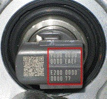

This function is used to program new injector codes to the control unit after injector replacement. The injector code is printed on the injector's main part. The code consists of 30 characters.
Since individual injectors have different properties the engine's electronic control unit corrects the injection time for each cylinder to improve injection accuracy. The injector code is a pre-adjusted calibration which is sent to the engine's electronic control system.
Note:
Fault at registration of injector identification code will entail rough idling, abnormal engine noise, and poorer emissions.
Preconditions for the test:
Ignition on, engine off.

Procedure:
Press "OK" to start programming.
The old registered codes are shown.
Select the cylinder on which the injector is replaced.
Enter the 30-digit code from the new injector, see figure.
The new registered code is shown.
If more injectors are to be programmed, select "Yes" when asked "Do you want to adapt more injectors?", otherwise select "No".